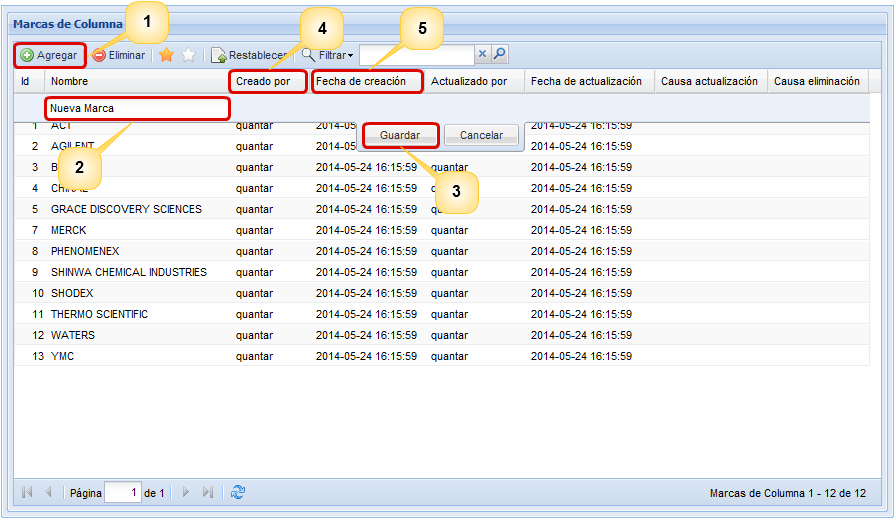
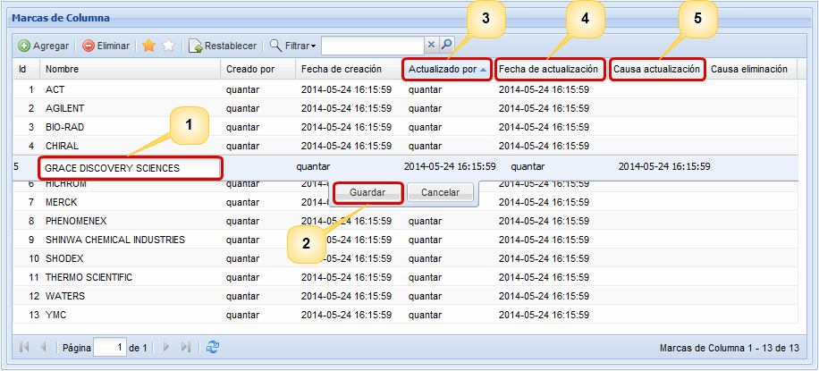
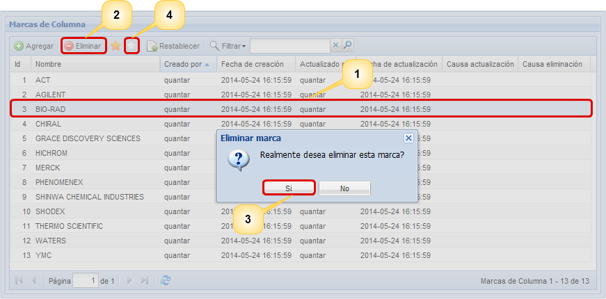
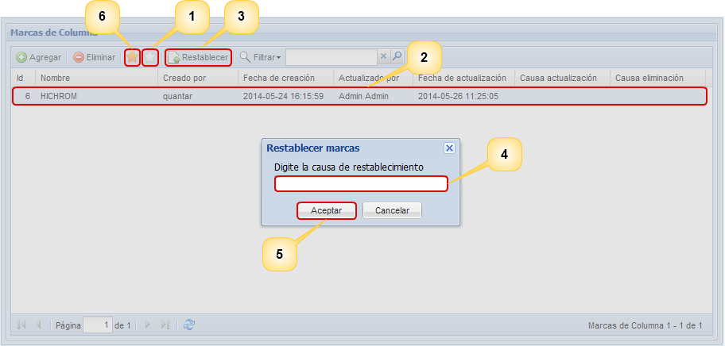

Agregar
marca
Para agregar una marca pulse
el botón Agregar (1),
el sistema desplegará en la parte superior de la lista una
nueva fila en la cual debe diligenciar el nombre de la nueva
marca (2) y luego pulsar el botón Guardar
(3). El sistema mostrará un breve mensaje en el que le
informará si ha creado con éxito la nueva marca. En la
Figura 2 se puede observar la pantalla para la creación de
marcas. Los campos Creado
por (4) y Fecha de
creación (5) nos darán información sobre el usuario
que registró la información y la fecha en la cual realizó el
registro.

Figura 2. Pantalla para la creación de marcas.
Actualizar
Para actualizar una marca debe dar
doble click sobre la marca que desea
modificar (1), edite el nombre y pulse el botón Guardar (2), el sistema le
preguntará porque razón desea actualizar esta información,
digite la razón y pulse el botón Aceptar.
Luego
el sistema le mostrará un breve mensaje en el que le
informará sobre el éxito de la actualización. En las
columnas Actualizado por (3), Fecha de actualización (4)
y Causa actualización (5),
podrá observar porque han sido modificados los registros y
quién ha realizado el último cambio repectivo. En la
figura 3 se muestra el proceso de actualización de una
marca.

Figura 3. Pantalla para la actualización de una marca.
Eliminar
Para eliminar una marca,
seleccione de la lista de marcas registradas la
marca que desea eliminar (1) y pulse el botón Eliminar (2). El
sistema desplegará una pequeña ventana donde le preguntará
si realmente desea eliminar la marca en
donde el usuario debe seleccionar la opción Si
(3),
luego el sistema le preguntará porqué razón desea
eliminarla, digite la razón y pulse el botón
Aceptar.
El sistema le mostrará un breve mensaje en el que le
informará del éxito de la eliminación. En el listado
de marcas eliminadas denotado
por una estrella blanca (4)
podrá observar el registro que eliminó anteriormente.
En la Figura 4 se muestra la pantalla para llevar a cabo el
proceso de eliminacion de una marca.

Figura 4. Pantalla para la eliminación de una marca.
Restablecer
Si se ha eliminado una
marca,
usted tiene la posibilidad de recuperar la información
seleccionando la opción para ver las marcas
eliminadas denotada por la estrella blanca (1), luego
seleccione de la lista de marcas eliminadas la marca que
desea recuperar (2) y pulse el botón Restablecer (3).
El sistema le preguntará porqué razón usted desea
restablecer la marca,
digite la razón (4) y pulse el botón
Aceptar
(5).
Luego el sistema le mostrará un breve mensaje en el
que le informará si la marca se ha restablecido con éxito.
Si la marca se ha restablecido con éxito volverá a aparecer
en la lista de marcas activas denotada con una estrella
amarilla (6). En la Figura 5 se muestra la pantalla
donde se muestra el proceso de restablecimiento de una
marca.

Figura 5. Pantalla para el restablecimiento de una marca.